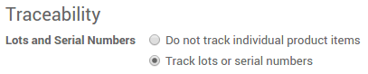
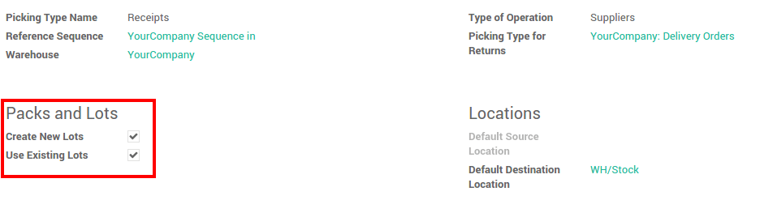
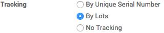
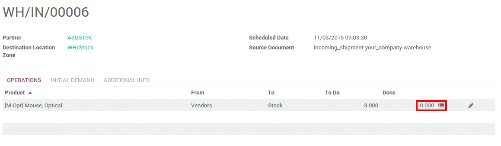
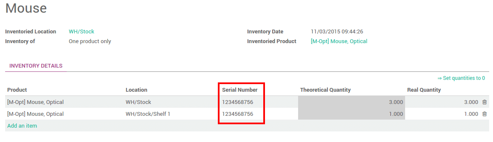
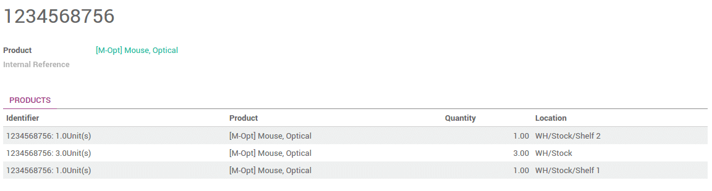

Overview
Lots are useful for products you receive in great quantity and for which a lot number can help in reportings, quality controls, or any other info. Lots will help identify a number of pieces having for instance a production fault. It can be useful for a batch production of clothes or food.
Odoo has the capacity to manage lots ensuring compliance with the traceability requirements imposed by the majority of industries.
The double-entry management in Odoo enables you to run very advanced traceability.
Setting up
Application configuration
You need activate the tracking of lots in the settings. In the Inventory application, go to , select Track lots or serial numbers
In order to have an advanced management of the lots, you should also select Manage several locations per warehouse.

Then click on Apply.
Operation types configuration
You also need to set up how you will manage lots for each operations. In the Inventory application, go to .
For each type (receipts, internal transfers, deliveries,...), you can set if you can create new lot numbers or only use existing lot numbers.
Product Configuration
Finally, you have to configure which products you want to track in lots.
Go into , and open the product of your choice. Click on Edit, and in the Inventory tab, select Tracking by Lots, then click on Save.
Manage lots
Transfers
In order to process a transfer of a product tracked by lot, you have to input the lot number(s).
Click on the lot icon :
A window will pop-up. Click on Add an item and fill in the lot number and the quantity.

Depending on your operation type configuration, you will be able to fill in new lot numbers, or only use existing ones.
Note
In the scanner interface, you just have to scan the lot numbers.
Inventory adjustment
Inventory of a product tracked by lot can be done in 2 ways:
- Classic inventory by products
- Inventory of a lot
When doing a classic inventory, there is a Serial Number column. If the product has already been assigned with a number, it is already pre-filled.
Click on Add an item if the product has not been inventoried yet. You can easily create lots, just type in a new lot number in the column.
You can also just do the inventory of a lot. In this case, you will have to fill in the Lot number. You can also create a new lot from here. Just type in the number, a window will pop out to link the number to a product.

Lots traceability
You can check the lot traceability from
You can have more details by clicking on the Traceability button :